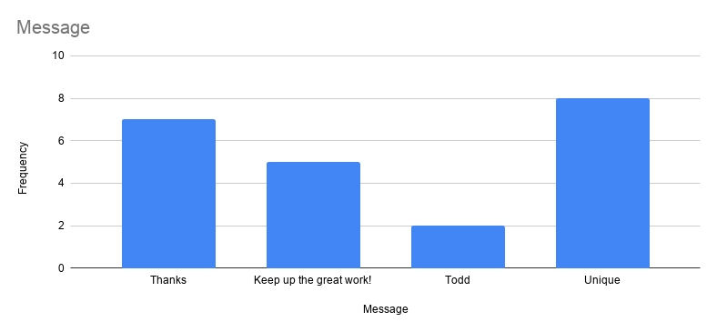
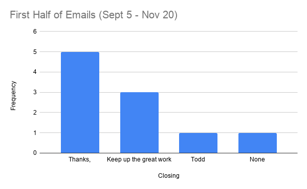
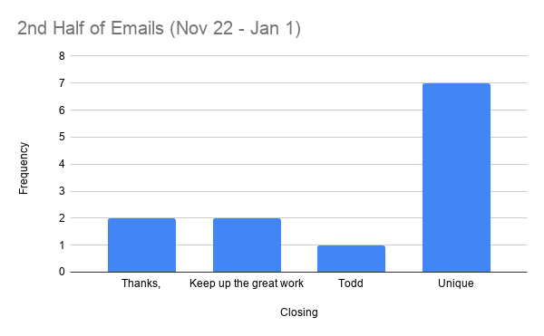
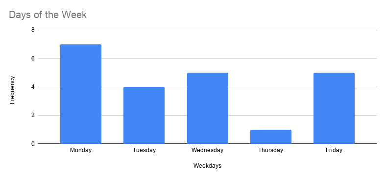
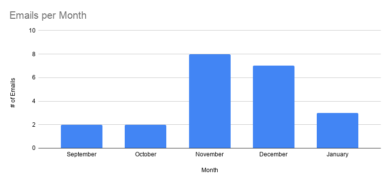
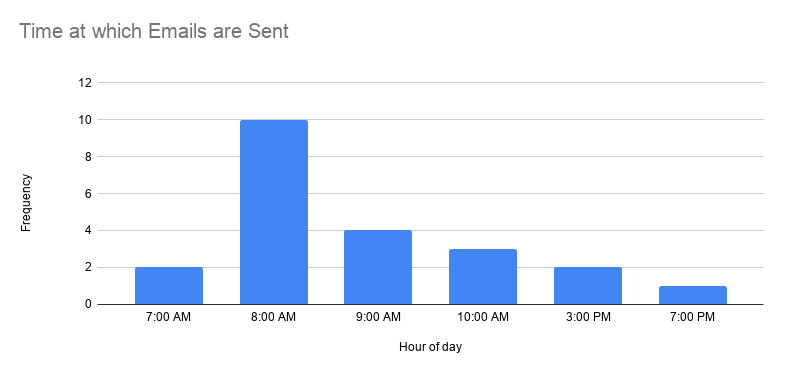

Statistics about the Closings Todd uses in his Emails
Note: does not include Hotschedule messages
Todd uses a variety of closings in his emails. This data was compiled using the emails received between September 5 and January 1. In this time he has sent 21 emails, regarding subjects such as who is the team member of the month, availabilities, and warm clothing. If you would like the raw data, please message me on Hotschedules.

Here we see the closings Todd uses. The most popular individual closing is simply "Thanks," followed by "Keep up the great work!" Todd has also used a unique closing (one that has appeared only once) more times than any individual phrase. Most interesting.
 
However, statistics can be misleading. As the above two charts show, when Todd first began he used primarily standard closings - five of seven uses of "Thanks," are here. Additionally, the only unique closing used in the first half (Nov 4) is when there was no closing at all! In the second chart, however, the unique closings far outweigh the standard ones.
Since I did all this work to compile the data, I decided to do a couple of other analyses of when Todd sends emails. Below are statistics for day of the week, month, and the time at which emails are sent.
  
Some additional facts gleaned from looking through the data:
- There are three instances where Todd has emailed two or more times in one day: Dec 2, Dec 3, and Jan 1. Each time a different closing is used.
- The shortest time between two messages on one day is 7 minutes, presented on both Dec 2 and Jan 1. The longest time is 16 minutes, on Dec 3.
- The first email Todd ever sent (concerning Tristan and Yordi becoming Team Members of the month) was on a Thursday. He has not sent another email on Thursday since.
- Todd has never sent an email (or a general Hotschedules message) on a Saturday, much less a Sunday.
- The titles of Todd include: Voting Advocate, The People's HR Director, and your friendly neighborhood HR Director. He has also stated on Dec 23 and Jan 1 that he is your friend.
- Todd has included his last name in his closing three times (Nov 29, Dec 20, Dec 23) and two of those times (Dec 20 and 23) he included his middle initial, an M. These two messages are also consecutive. What could it mean? What is Todd's middle name?
- The one time Todd did not include a closing of any kind was Nov 4 at 9:48 AM. This email regarded the October voting for TM of the month.
- Between September 5th and September 30th, a period of 25 days, Todd did not send any emails. Between October 2nd and October 28th, a period of 26 days, he was also silent. Todd has never been so distant since.
- The two times Todd has closed his email with simply "Todd" it has been between 8 and 9 AM.
- Of the three times Todd has sent an email in the afternoon, one has been "Thanks," and two have been "Keep up the great work!"
- In November, 4 of 8 emails (50.0%) were sent on a Friday.
- In December, 4 out of 7 emails (57.1%) were sent on a Monday.
- 2 of 3 times Todd has gained a title, it has been a Friday.
- Todd has used an exclamation mark 8 times, 5 as part of "Keep up the great work!" and three unique times - "Remember, your vote counts!" "Looking forward to seeing the spirit of Christmas radiating throughout our Chick-fil-A!" and "See you all soon!"